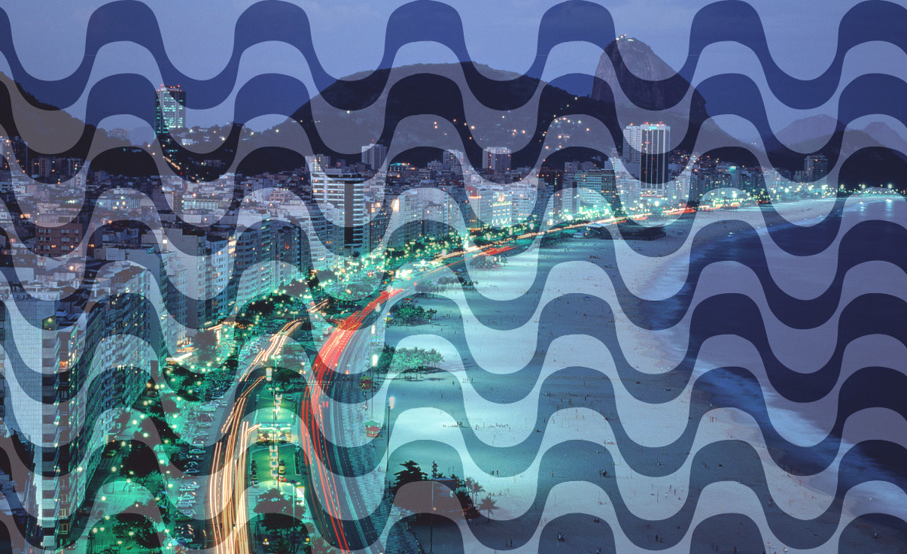
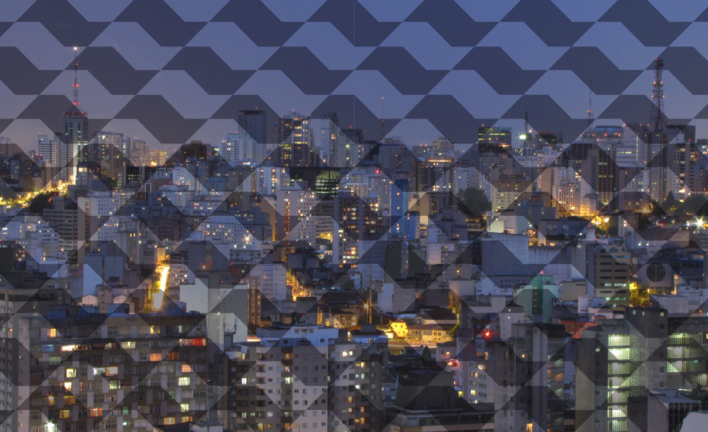
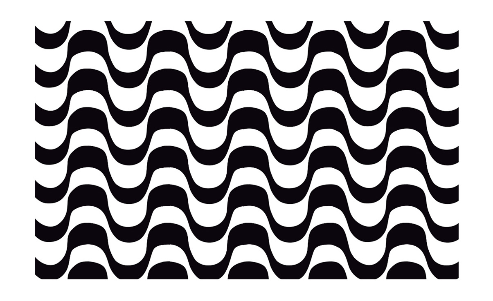
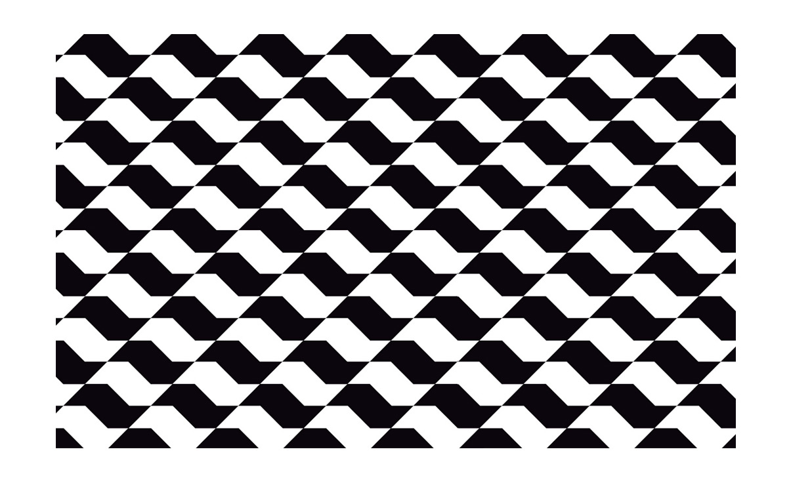
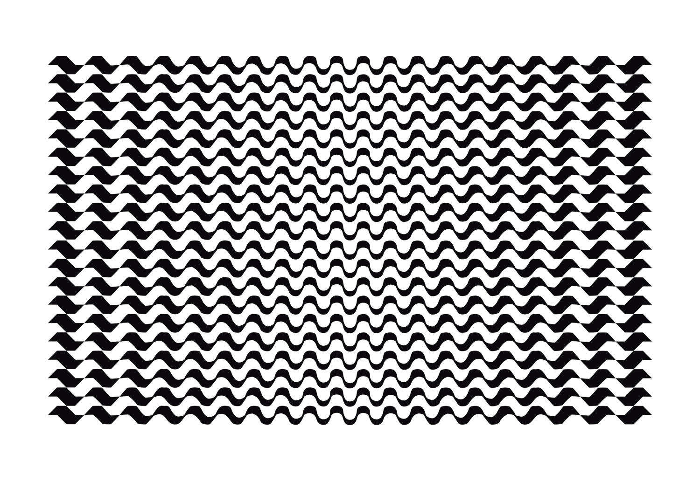
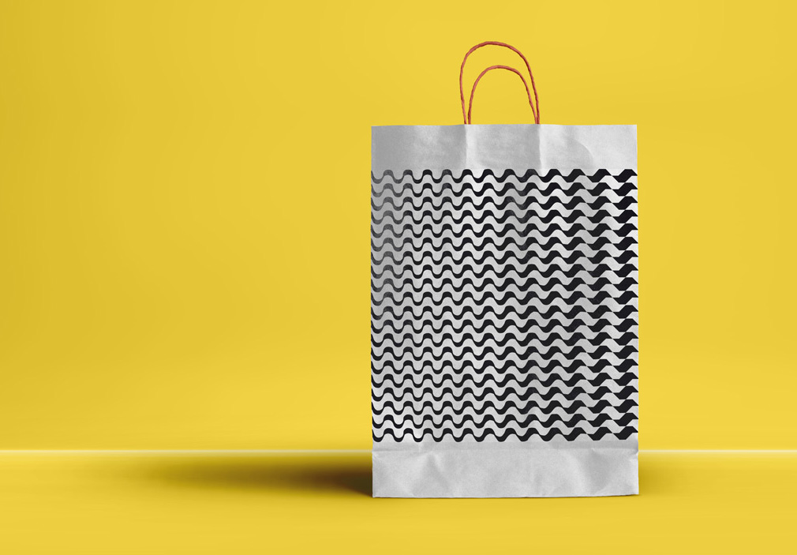
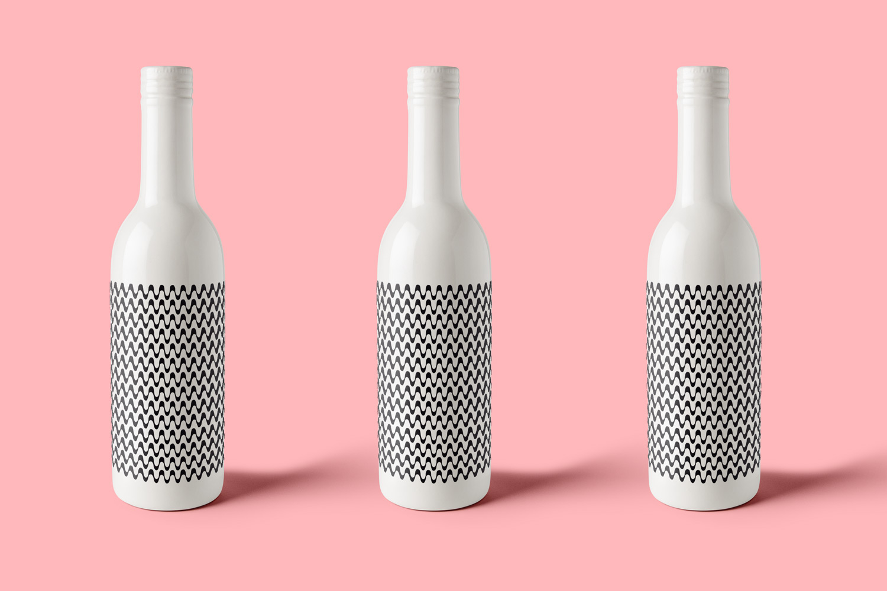
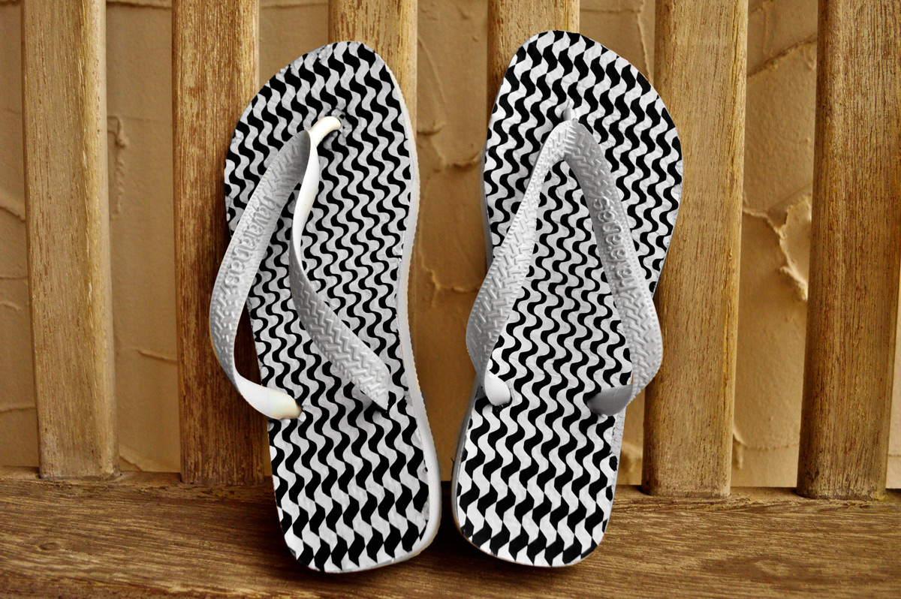
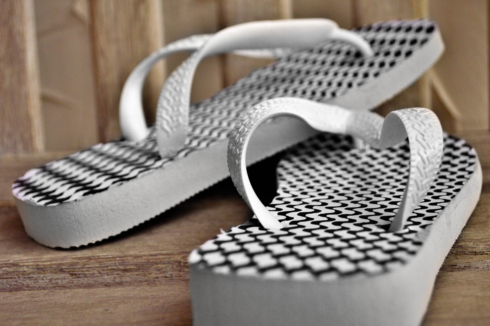

Descatraque
mockups for a website contest
The website Catraca Livre started as an initiative to stimulate people to attend free events to explore the city.
In this contest, with the neologism “Descatraque” (let go of the turnstiles), the contestants had to come up with a representation of the idea of breaking down barriers.
my decision relied on the historic rivalry between São Paulo and Rio de Janeiro, 2 of the biggest audiences for the website at the time.
The idea was to find something that could represent a connection between these two cities and, with that in mind I tried to create a relation between two very representative symbols of each one: the design of the sidewalks.








